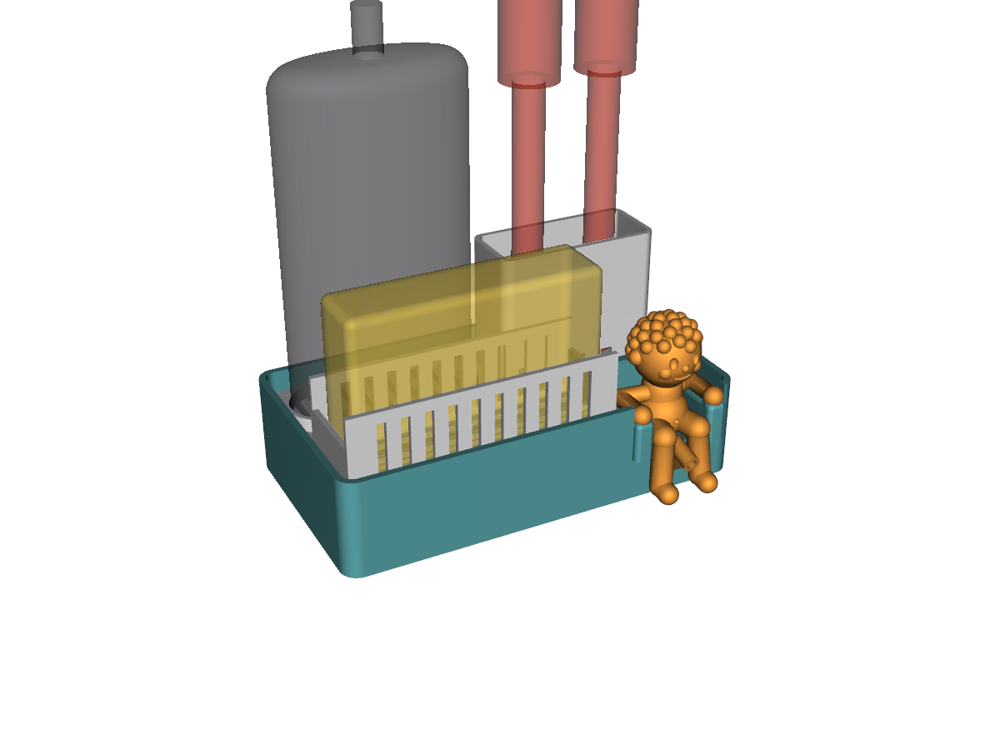
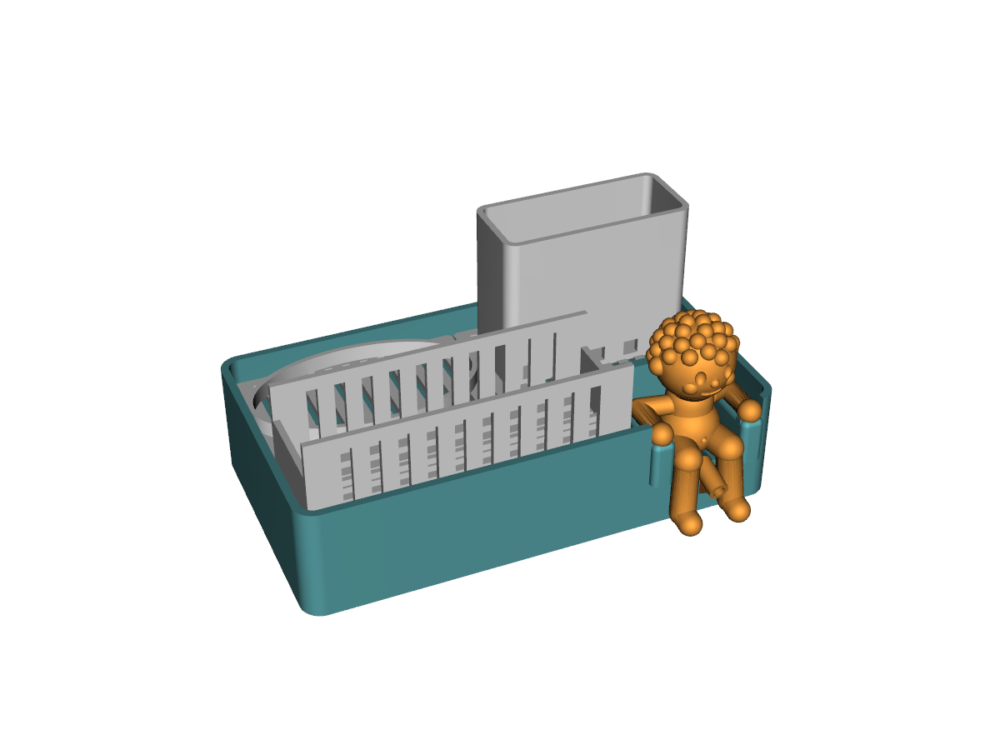
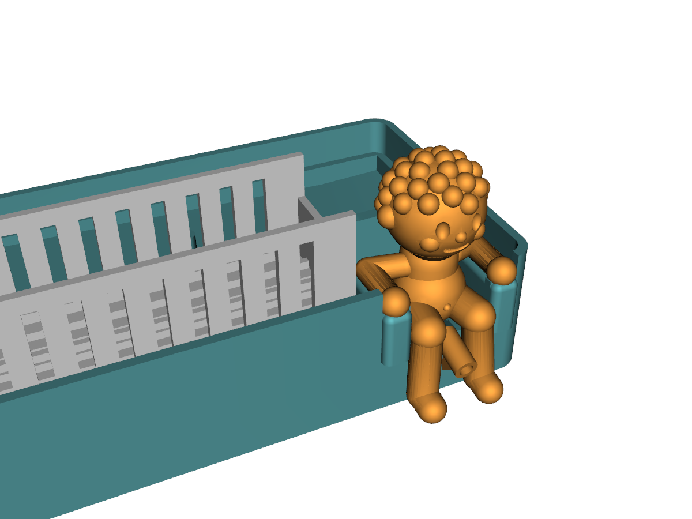
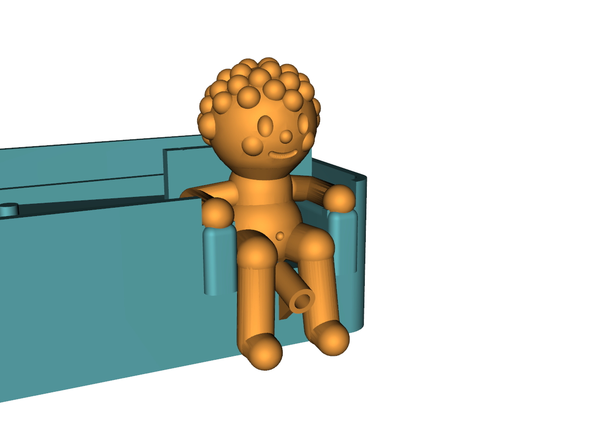
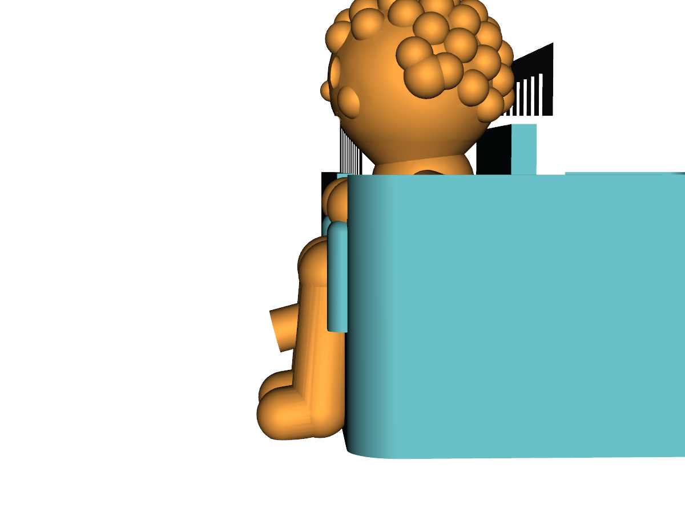
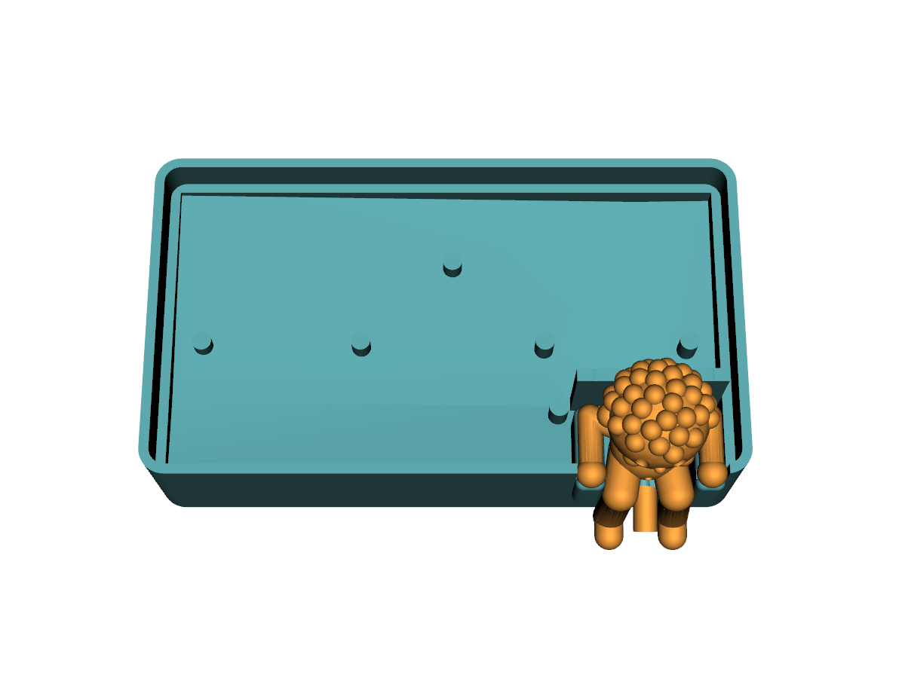

Front row: sponge standing on edge, and the little guy. Back row: soap dispenser and an upright brush slot. Everything drains into a shared sloped pan, then out through the little guy sitting in an armchair built into the front wall, legs over the edge.






| Overall footprint | 182 × 102 mm |
| Sticks out past the front edge | ≈ 15 (feet + spout) |
| Sponge (standing on edge) | 110 long × 70 tall × 30 thick |
| Soap base (EKOLN, guessed oval) | 82 × 45 |
| Brush slot inner | 70 × 28, 60 tall |
| Floor at drain / wall top | 20 / 45 |
| Floor slope front / sideways | 3° / 2° |
| Spout bore | Ø 4.5, tilted 15° down |
| Figure height | ≈ 60 |